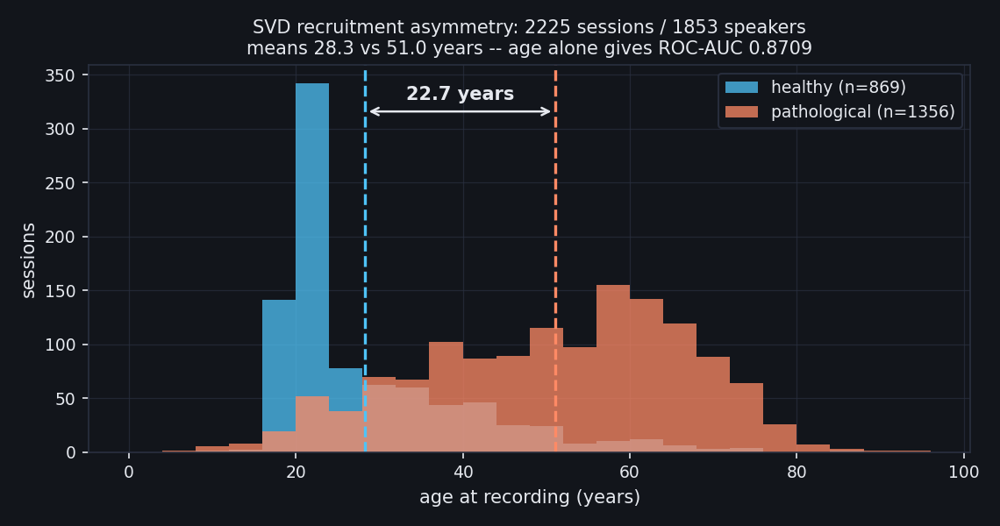
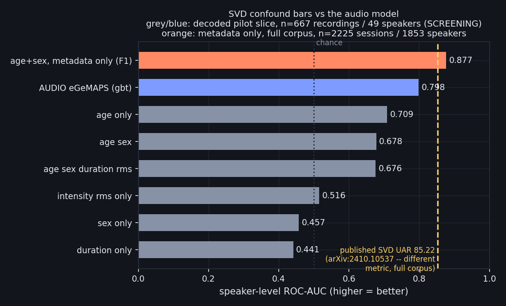

An autonomous, pre-registered audit harness that systematically re-tests published voice-health classification claims for speaker leakage, acquisition confounds, and cross-corpus collapse — publishing a transparent ledger of which claims survive. This program does not build another voice-disease detector.
A person speaks; a model listens and predicts a health condition. The appeal is that the sensor is a microphone everyone already owns. Two mechanisms make it plausible rather than magical. First, the larynx is the instrument — a vocal-fold paralysis, a polyp, swelling, a tumour or surgical scarring changes the sound directly. Second, speech is a motor act needing breath control, timing and fine neuromuscular coordination, so neurological and respiratory disease can leave traces even when the larynx is healthy. The first mechanism is short and well-evidenced; the second is a long causal chain and correspondingly weaker. The literature also claims depression, diabetes and heart failure from voice — this program tests none of those, for the reason in the next block.
The primary corpus is the Saarbrücken Voice Database, a clinical archive from Saarland University Hospital. Each participant records 14 short vocalisations: the sustained vowels /a/, /i/, /u/ at normal, high, low and rising-falling pitch, plus one spoken German sentence.
Sorted by how many speakers carry each diagnosis — not how many recordings, since a condition with 200 clips from 8 people is an 8-person condition:
| condition has ≥ N speakers | number of conditions | speakers covered |
|---|---|---|
| ≥ 100 | 2 | 265 |
| ≥ 50 | 6 | 535 |
| ≥ 30 (this program's data floor) | 12 | 762 |
| ≥ 5 | 28 | 938 |
| ≥ 1 | 70 | 1,019 |
19 of the 70 conditions are represented by a single speaker. So the honest answer is:
And note what those conditions are: almost all are dysphonias and structural larynx disorders — the category where the sound changes because the sound-producing organ changed. This corpus contains essentially no systemic disease. A model trained here detects disordered voice, not disease in general, and describing it otherwise is a category error.
Published SVD results report UAR in the mid-80s. But healthy participants here average 27 years and patients 49, so patient age alone reaches ROC-AUC 0.87 without hearing a single audio sample (F1 below). Any classifier that quietly learns "older ⇒ patient" inherits that score for free. The interesting quantity is therefore not the accuracy but the margin above the demographic baseline on the identical folds — a number the field does not currently report. Measuring it is the entire purpose of this repository.
Every count in this section is recomputed at build time from data/interim/svd/manifest.csv; none is hand-entered.
CognoSpeak/PROCESS-2); Bridge2AI-Voice v3.1.0 needs PhysioNet credentialing plus a separate DACO application for raw audio. Both are paperwork-bound, not compute-bound. (data/ACQUISITION_STATUS.md)Using only the demographic metadata distributed with the Saarbrücken Voice Database — no audio, no features, no model of speech — over n = 2,225 sessions (1,356 pathological / 869 healthy) from 1,853 unique speakers:
| predictor | ROC-AUC (pathological vs healthy) | n |
|---|---|---|
| age alone | 0.8709 | 2,225 sessions |
| sex alone | 0.5172 | 2,225 sessions |
age + sex, logistic, speaker-disjoint 5-fold GroupKFold | 0.8768 | 2,225 sessions / 1,853 speaker groups |
Healthy speakers are young volunteers; pathological speakers are older clinic patients. Mean age 28.3 years (healthy) vs 51.0 years (pathological) — a gap of 22.7 years.

voice_data.csv by scripts/build_dashboard.py; the script aborts if the recomputed counts and means disagree with F1_demographic_baseline.json.200 of 1,853 speakers contribute more than one session (max 24 sessions for a single speaker). Splitting SVD at the recording level — the default in any naive train_test_split — leaks those speakers across folds. All work in this repository splits on SprecherID via GroupKFold and asserts speaker-disjointness before every fit.
Quoted verbatim from FINDINGS.md §F1. The published SVD benchmark is UAR 85.22 (arXiv:2410.10537) — different metric, indicative only.
# metadata (167 KB), then the baseline -- CPU, seconds, no audio required python scripts/fetch_svd.py --metadata-only python scripts/audit_demographic_baseline.py --dataset svd
Command: run_benchmark.py --corpus svd --backbone egemaps --head all --folds 5 --repeats 10 — opensmile-eGeMAPSv02, 88 features, 5-fold speaker-disjoint × 10 repeated partitions, n=667 recordings / 49 speakers, 20 pathological / 29 healthy speakers.
| head / baseline | speaker-level ROC-AUC | 95% CI | recording-level ROC-AUC | UAR | ECE | verdict vs age bar |
|---|---|---|---|---|---|---|
logreg | 0.6172 | [0.437, 0.777] | 0.5709 | 0.6560 | 0.204 | NOT CLEARED |
linsvm | 0.5259 | [0.353, 0.697] | 0.5314 | 0.5250 | 0.088 | NOT CLEARED |
mlp | 0.6310 | [0.460, 0.791] | 0.5958 | 0.6560 | 0.209 | NOT CLEARED |
gbt | 0.7983 | [0.663, 0.925] | 0.6910 | 0.6655 | 0.152 | NOT CLEARED |
ens_rank3 | 0.7190 | [0.566, 0.855] | 0.6394 | 0.6448 | 0.186 | NOT CLEARED |
confound age_only | 0.7086 | [0.533, 0.874] | 0.7027 | 0.6716 | 0.244 | THE BAR |
confound sex_only | 0.4569 | [0.286, 0.630] | 0.4552 | 0.6336 | 0.282 | baseline |
confound age_sex | 0.6776 | [0.495, 0.853] | 0.6725 | 0.7138 | 0.188 | baseline |
confound duration_only | 0.4414 | [0.283, 0.606] | 0.4149 | 0.5000 | 0.012 | baseline |
confound intensity_rms_only | 0.5155 | [0.359, 0.689] | 0.4655 | 0.5000 | 0.087 | baseline |
confound age_sex_duration_rms | 0.6759 | [0.495, 0.852] | 0.6723 | 0.7138 | 0.179 | baseline |
Sortable: click a column header. CI = 2,000-resample speaker-level bootstrap. All rows: n=667 recordings / 49 speakers.
Result: the strongest confound baseline is age_only at speaker-level AUC 0.7086. The best audio head (gbt) reaches 0.7983, a delta of +0.0897 (95% CI [-0.076, 0.264]). All 5 heads are NOT CLEARED. On this slice, eGeMAPS carries no demonstrated signal above patient age.
What this does NOT claim. This is 49 speakers, which the preprocessing status file already flags as screening-tier: a speaker-disjoint test fold holds ~10 people and the 95% CI on any accuracy is roughly ±15 pp — visible in the intervals above. It is not evidence that eGeMAPS fails on full SVD, and it is not comparable to the published UAR 85.22, which is a different metric on the full 2,225-session corpus. It is a null on a small slice, reported because nulls are reported (R8).

bench_svd_egemaps.json or F1_demographic_baseline.json. The dashed line is the published target and is a different metric (UAR) on a different, larger slice — it is drawn for orientation, not as a like-for-like contest.Published SOTA cells are quoted verbatim from corpus/SURVEY_datasets.md §1. "Ours" is filled only from a measured artifact in autoresearch_results/; everything else says not yet measured. Margins are shown only where the two numbers are the same metric on a comparable slice — otherwise the cell says so.
| dataset | published SOTA | ours | margin vs SOTA | confound baseline | margin vs confound | speaker-disjoint? | status |
|---|---|---|---|---|---|---|---|
| SVD (Saarbruecken Voice Database) | UAR 85.61 (F) / 84.69 (M) / 85.22 (combined) — arXiv:2410.10537 | UAR 0.6655 / AUC 0.7983 n=667 recordings / 49 speakers, eGeMAPS gbt, speaker-level SCREENING | not comparable published UAR is the full 2,225-session corpus; ours is the decoded pilot slice | 0.7086 AUC age only, same run 0.8768 AUC age+sex, metadata, full corpus (F1) | +0.0897 AUC 95% CI [-0.076, 0.264] — includes 0 NOT CLEARED | YES — SprecherID | SCREENING / NEGATIVE |
| Coswara | AUC ~0.92 intra-dataset | not yet measured | not yet measured | not yet measured | not yet measured | YES — participant id submission-disjoint, not person-disjoint: returning-user flag is missing for 680 of 2,746 | PENDING |
| PROCESS-2 | macro-F1 0.59 (3-way), F1 0.85 (2-way), MMSE RMSE 3.87 (DistilBERT) arXiv:2605.14888 | not yet measured | not yet measured | not yet measured | not yet measured | n/a — not obtained | BLOCKED manual HF gate; 400 participants fails the 500/class bar — screening-tier only |
| ICBHI 2017 respiratory sound | ICBHI score (event-level) | not yet measured | not yet measured | not yet measured | not yet measured | n/a — not obtained | BLOCKED |
| ADReSS / ADReSSo / ADReSS-M | ADReSS F-score ~0.79 (with age+sex as inputs); ADReSSo acoustic F-score ~0.76 | not yet measured | not yet measured | not yet measured | not yet measured | n/a — not obtained | BLOCKED |
| corpus | on disk | files found | decoded | speakers | audio | class balance | licence / access | speaker-disjoint possible? |
|---|---|---|---|---|---|---|---|---|
| SVD (Saarbruecken) 33262 duplicate waveform hashes (within-speaker only) | 152 MB | 61,178 | 61,170 8 failed | 1,679 | 3639.2 min | 41,653 pathological 19,517 healthy | free to use ("free for reproducible voice science") | YES provenance: participant |
| COUGHVID | 2.30 GB | 13,535 | 13,535 | 13,535 | 1856.9 min | 10,132 healthy 2,683 symptomatic 720 COVID-19 | open (Creative Commons via Zenodo) | NO — cannot support an evaluation claim (0 real speaker ids) uuid is per-recording; one person may appear in both halves of any split and there is no way to detect it. Pretraining and OOD probing only. |
| Coswara | 12.98 GB | 684 | 610 74 failed | 72 | 110.7 min | 529 healthy 45 no_resp_illness_exposed 36 resp_illness_not_identified | open | YES provenance: participant |
Counts read from data/interim/<corpus>/summary.json and the row count of each manifest.csv; on-disk sizes from data/ACQUISITION_STATUS.md; licences from corpus/SURVEY_datasets.md. SVD and Coswara are partial acquisitions — the speaker counts here are what is decoded on this host, not corpus totals (SVD: 1,853 speakers exist, 49 decoded; Coswara: 2,746 exist, 72 decoded).
Parsed from IDEA_TABLE.md. A hypothesis whose falsifier has not been executed is UNTESTED, never SUPPORTED (R7). Tier and family size are pre-registered in version control before the sweep; reclassifying a loser as screening afterwards is HARKing and is a blocker.
| id | claim | falsifier | required n | tier | datasets | status |
|---|---|---|---|---|---|---|
| V1 "SSL beats handcrafted features" may be an artifact of leaky protocols | Under simultaneously speaker-disjoint and demographically balanced splits, frozen SSL/health embeddings do not reliably beat eGeMAPS. | If eGeMAPS lands within 2σ_seed of the best of {HeAR, WavLM-base+, Whisper-small-enc} on ≥ 2 of 3 corpora under A3 = speaker_disjoint + demographically_matched, A4 = fit_per_fold, the "SSL wins" claim is falsified for this task family. | 10 m = 9 (3 encoders × 3 corpora, each vs eGeMAPS) · n = 10 → 0.001953 ≤ 0.05/9 = 0.005556 ✓ | EVALUATION | SVD · Coswara · COUGHVID | UNTESTED |
| V2 Speaker-identity subspace ablation: how much of the "disease" signal is identity? | A large fraction of frozen-embedding disease discrimination lives in a low-rank speaker-identity subspace, and removing it collapses AUC further than a variance-matched random projection of the same rank does. | Two-sided, both pre-registered. (a) If projecting out the rank-k speaker subspace collapses disease AUC toward chance while a variance-matched same-rank random projection does not — i.e. D(k) = AUC_rand(k) − AUC_spk(k) has a Holm-corrected 95% CI excluding 0 and AUC_spk(k)'s CI includes 0.5 — the clinical-validity claim for that model/dataset pair is falsified. (b) Conversely, if D(k) is within... | 10 m = 14 (7 ranks k ∈ {1,2,4,8,16,32,64} × 2 corpora) · n = 10 → 0.001953 ≤ 0.05/14 = 0.003571 ✓ | EVALUATION | SVD (≥ 2 vocalisations/speaker, 2,043 speakers) · Coswara (9 streams/participant). COUGHVID is excluded — no speaker identifiers, so the subspace cannot be estimated. | UNTESTED |
| V3 Where does health-specific pretraining actually cross general-purpose pretraining? | Health-acoustic pretraining buys sample-efficiency, not ceiling: HeAR leads at small labelled-set size and is overtaken by Whisper-enc as n grows. | Sweep labelled-set size n_train ∈ {25, 50, 100, 200, 400, 800, all}, subject-disjoint. If HeAR never crosses Whisper-enc at any n_train on any of the 3 tasks (Holm-corrected), the "health pretraining is the right prior" claim is falsified and reduces to a low-data convenience argument. If HeAR wins low and loses high, the crossover point is the deliverable. | 12 m = 42 (2 contrasts {HeAR vs Whisper-enc, HeAR vs WavLM} × 7 sizes × 3 tasks) · n = 12 → 0.000488 ≤ 0.05/42 = 0.001190 ✓ | EVALUATION | SVD (voice pathology) · Coswara (respiratory) · COUGHVID (respiratory, OOD) | UNTESTED |
| V4 Does calibration degrade with distribution shift, or independently of it? | Calibration error does not track AUC collapse under corpus shift, so model confidence is unusable as an out-of-domain detector. | Measure ECE, Brier, and reliability curves within- and cross-corpus on COUGHVID↔Coswara (both directions) and on SVD→VOICED. If ECE stays flat within its own seed noise band while AUC falls from ~0.80 to ~0.55, confidence is falsified as a shift detector — a negative result with direct deployment consequences. Raw and temperature-scaled variants reported separately. | 10 m = 6 (3 corpus pairings × {raw, temperature-scaled}) · n = 10 → 0.001953 ≤ 0.05/6 = 0.008333 ✓ | EVALUATION | Coswara ↔ COUGHVID · SVD → VOICED | UNTESTED |
| V5 Zero-shot audio-LLMs as a leakage-free reference point | The gap between a supervised probe and a zero-shot audio-LLM is a cheap, model-free estimate of how much leakage a protocol admits, because a zero-shot model has no training split and therefore cannot leak speaker identity, demographics, or preprocessing statistics. | Compute Δ_leaky = AUC_sup(random_recording split) − AUC_zeroshot and Δ_honest = AUC_sup(speaker_disjoint + demographically_matched) − AUC_zeroshot. If Δ_leaky ≈ Δ_honest (overlapping bootstrap CIs) on ≥ 2 of 3 datasets, the proposed leakage estimator is falsified — the gap tracks supervised capacity, not leakage. If Δ_leaky ≫ Δ_honest consistently across ≥ 3 datasets, the field gains a leakage audit... | 10 screening n ≤ 3 · promotion target m = 3 (3 datasets), n = 10 → 0.001953 ≤ 0.016667 ✓ (n = 8 would also satisfy m = 3) | EVALUATION | SVD · Coswara · COUGHVID | UNTESTED |
| V6 Preprocessing-fit leakage is corpus-specific and cannot be assumed small | The inflation from fitting the scaler/normaliser before splitting varies by an order of magnitude across corpora, so "we scaled before splitting but it's a small effect" is not defensible on an unmeasured corpus. | If the fit_on_all − fit_per_fold AUC difference has a 95% CI contained within ±0.01 AUC on all of SVD, Coswara, COUGHVID for both eGeMAPS and a frozen SSL representation, the "corpus-specific magnitude" claim is falsified for this pipeline family and preprocessing scope can be de-prioritised as an audit axis. | 10 m = 6 (3 corpora × 2 representations) · n = 10 → 0.001953 ≤ 0.008333 ✓ | EVALUATION | SVD · Coswara · COUGHVID | UNTESTED |
| V7 The Clever-Hans silence shortcut beyond the Pitt corpus | Non-phonatory signal alone (silence/pause structure, recording-level duration and intensity statistics) achieves a substantial fraction of headline performance on voice-health corpora outside the one where the effect was first documented. | If silence_only and duration+intensity_only baselines both score < 0.60 AUC on all of SVD, Coswara and COUGHVID under A3 = speaker_disjoint, the generalisation claim is falsified and the shortcut is confirmed Pitt-specific for this corpus set. | 10 m = 6 (3 corpora × 2 shortcut feature sets) · n = 10 → 0.001953 ≤ 0.008333 ✓ | EVALUATION | SVD · Coswara · COUGHVID | UNTESTED |
The 10 traps catalogued in corpus/SURVEY_datasets.md §3, each reduced to its operative rule. Every experiment in this program is checked against this list.
| # | trap | operative rule |
|---|---|---|
| 3.1 | Speaker-dependent splits — the #1 leakage failure | Group-aware GroupKFold on speaker id, always. Never train_test_split on recordings. Report the speaker-level n alongside the recording-level n. |
| 3.2 | Recruitment / symptom confound — the field's canonical negative result | Any respiratory claim in this program must report a confounder-matched number alongside the raw number, or it is not a claim. |
| 3.3 | Recording-device and site confounds | Every headline number needs a cross-corpus companion number. Log the recording device / site as a feature and check that a device-only classifier is near chance. |
| 3.4 | Interviewer / prompt shortcut | Strip all interviewer audio and text from any interview-based corpus before training. |
| 3.5 | Age and sex confounds | Report per-sex and per-age-band metrics; include a demographics-only baseline classifier in every experiment and claim only the margin above it. |
| 3.6 | Language and accent confounds | Do not report a cross-lingual result as if it were an in-language one. |
| 3.7 | Tiny-n overfitting | Under the project's rigor contract these are screening-tier only: n<=3 seeds cannot reach p<0.05 under paired Wilcoxon, and a 12-speaker test fold has a standard error of roughly ±0.14 on accuracy. |
| 3.8 | "Balanced" is not "deconfounded", and ASR quality is a hidden variable | It does not remove recording-session, task-administration, or transcription-pipeline effects. |
| 3.9 | Label-provenance asymmetry | These are not interchangeable. A high AUC on a self-report corpus may be measuring self-report behaviour. |
| 3.10 | Anonymisation degrades diagnostic signal | Voice anonymisation, increasingly required for sharing, measurably harms downstream diagnostic classification (arXiv:2304.02181, COVID-19 case study). |